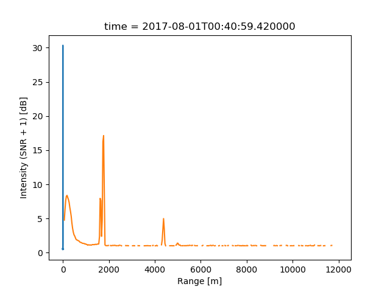

Note
Click here to download the full example code
Example on processing moments from ARM Doppler Lidar ACF data¶
Out:
/home/rjackson/.conda/envs/spectra_env/lib/python3.7/site-packages/xarray/core/computation.py:609: RuntimeWarning: divide by zero encountered in log10
result_data = func(*input_data)
/home/rjackson/HighIQ/examples/plot_processing.py:20: UserWarning: Matplotlib is currently using agg, which is a non-GUI backend, so cannot show the figure.
plt.show()
/home/rjackson/HighIQ/examples/plot_processing.py:26: UserWarning: Matplotlib is currently using agg, which is a non-GUI backend, so cannot show the figure.
plt.show()
import highiq
import matplotlib.pyplot as plt
# Load the data. This uses a module in the Atmospheric Community
# Toolkit to ensure that the input acf data are always
# entered into a 3D array of (time, nsamples, complex)
my_ds = highiq.io.load_arm_netcdf(highiq.testing.TEST_FILE)
my_ds_processed = highiq.calc.get_psd(my_ds)
# For plotting the spectra, simply use xarray's built in functionality
#
my_ds_processed.power_spectra_normed_interp.sel(range=400, method='nearest').plot()
plt.show()
# To retrieve the lidar moments, we can simply do this in one line
my_ds_processed = highiq.calc.get_lidar_moments(my_ds_processed)
my_ds_processed.intensity.plot()
plt.show()
my_ds_processed.close()
my_ds.close()
Total running time of the script: ( 0 minutes 0.840 seconds)